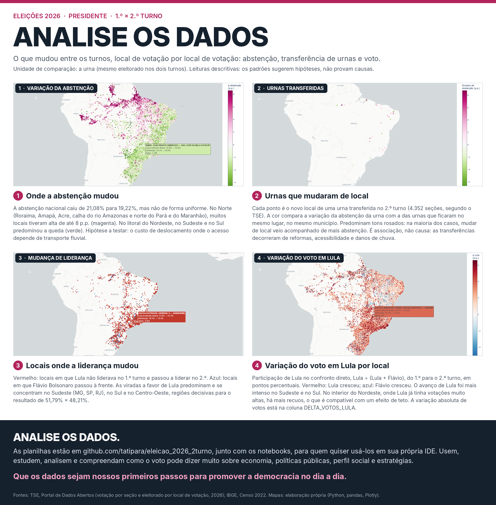

Analise
os dadosda eleição
Onde a abstenção mudou, quais urnas mudaram de endereço e onde o voto virou, entre o 1.º e o 2.º turno de 2026.
O mapa reúne os 94 mil locais de votação do país em uma página só. Ele demora para abrir e pede um computador; no celular, prefira as planilhas.

O que os mapas mostram
São leituras descritivas. Os padrões abaixo servem para formular hipóteses e orientar a próxima pergunta, não para provar causas.
A queda da abstenção não foi do país inteiro
No Norte — Roraima, Amapá, Acre, a calha do rio Amazonas, o norte do Pará e do Maranhão — muitos locais tiveram alta de até 8 pontos percentuais, enquanto o litoral do Nordeste, o Sudeste e o Sul puxavam a média para baixo.
Urna que mudou de endereço votou menos
Comparando cada urna transferida com as urnas que ficaram no mesmo lugar, dentro do mesmo município, a abstenção subiu mais onde o local mudou. O TSE transferiu seções por obras, acessibilidade e danos de chuva, então isso é associação, não causa.
As viradas se concentraram no Sudeste
Os locais em que a liderança passou de Flávio Bolsonaro para Lula estão sobretudo em Minas Gerais, São Paulo, Rio de Janeiro, no Sul e no Centro-Oeste — as regiões que decidiram o 51,79% contra 48,21%.
Onde já era muito alto, quase não cresceu
No interior do Nordeste, onde Lula tinha votações muito altas no 1.º turno, há mais recuos do que avanços — o comportamento esperado quando uma votação se aproxima do teto.
As planilhas
Tudo em CSV, codificação UTF-8 com BOM e separador vírgula, prontas para abrir no Excel, no R ou no pandas. Os arquivos grandes demais para o GitHub estão na aba Releases do repositório.
| Arquivo | Uma linha para cada | Principais colunas |
|---|---|---|
| presidente_T1xT2_por_urna.csv | urna, com o local dos dois turnos lado a lado | endereço e coordenadas no 1.º e no 2.º turno, distância entre eles, aptos, comparecimento, abstenção e votos de cada candidato |
| presidente_T1xT2_por_local.csv | local de votação | as mesmas medidas, somadas por escola, ginásio ou posto |
| presidente_T1xT2_por_municipio.csv | município, com o código do IBGE | variação da abstenção e do voto, pronta para cruzar com o Censo |
| presidente_T1xT2_por_uf.csv | unidade da federação | o resumo que cabe em uma tela |
| auditoria_T1xT2.csv | turno | os totais calculados ao lado dos totais oficiais do TSE |
| Eleicao2026_locais_abstencao_IBGE_v2.ipynb | — | o caderno que baixa, confere e monta tudo isso, para rodar no Colab ou na sua IDE |
Como os números foram apurados
De onde vêm os dados
Do Portal de Dados Abertos do TSE: a votação por seção eleitoral e o cadastro de eleitores por local de votação, que traz os aptos, o endereço e as coordenadas de cada seção em cada turno. A população dos municípios vem do Censo 2022 do IBGE.
O que é abstenção aqui
Eleitores aptos menos comparecimento, com o comparecimento medido pelo total de votos para presidente, incluindo brancos e nulos. É a mesma definição que o TSE usa, e o cadastro eleitoral é o denominador — população não é eleitorado.
Por que a comparação é feita por urna
A urna leva o mesmo grupo de eleitores nos dois turnos. O local de votação, não: quando uma seção é transferida, o local passa a receber outras pessoas. Comparar urna com urna separa a mudança de comportamento da mudança de composição.
O que esses números não dizem
São dados agregados por urna, nunca por eleitor. Se o voto em um candidato cresceu num local, isso pode vir de quem mudou de voto, de quem antes se absteve ou de quem votou em outro candidato no 1.º turno — atribuir o crescimento a um desses grupos seria falácia ecológica.